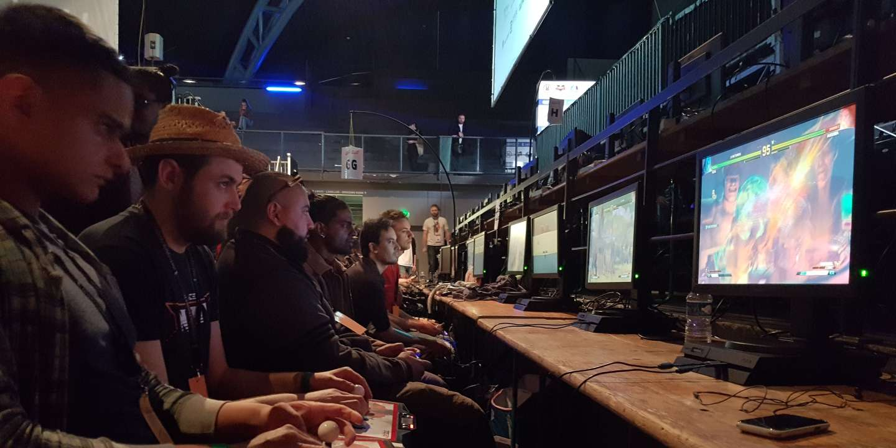
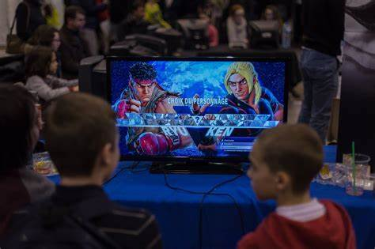
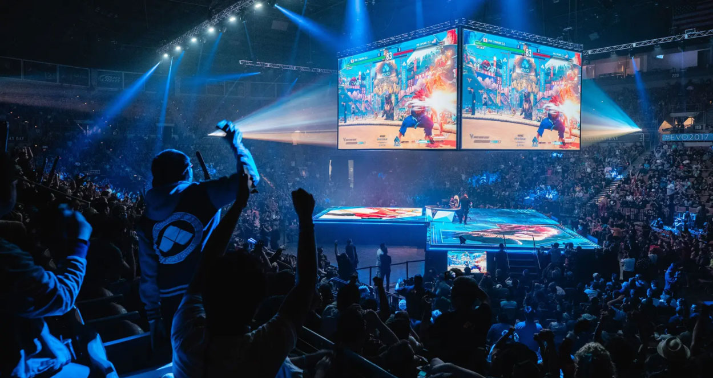
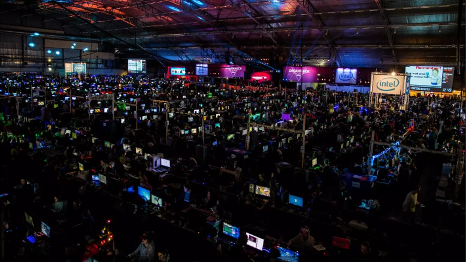

L' EVO est le diminutif de Evolution Championship Series.
Il s'agit du plus grand tournoi annuel de jeux de combat au monde. Il a lieu chaque annee a Las Vegas.
Il a commence comme un tournoi organise par des amateurs, il y a plus de 25 ans.
Il a pris de plus en plus d"ampleur au fur et a mesure des années. Depuis 2021, il a ete rachete par la marque constructeur Sony et RTS
(appartenant notament a la videaste/streameuse Pokimane).
En plus des tournois principaux, de nombreux tournois secondaires sont organiser par la communautee, sur le reste des jeux favoris du public.

Il y a desormais egalement une grande partie de la convention qui est dediée aux stands des Editeurs de jeux video et aux commercants.
L'EVO est une opportunite pour tous les fans de jeux de combat (comme moi)
de celebrer leur passion, et pour les Editeurs de faire leurs annonces sur les prochains jeux ou contenus.
La pluparts des participant ont un age compris entre 19 et 31 ans, mais il arrive que de jeunes enfants s'exerce a ce genre de loisir

Publicites commerciales
Le but principal des evenements en rapport avec l'EVO et de rassembler un maximum de personnes afin de promouvoir et de vendre les titres des studio participant via plusieurs
methodes :
- Affiche publicitaire ou promotionnel (offres de lancement d'un jeu, prix avantageux, produit offret si pre-commande)
- Par des sponsort ou des createur de contenu (remuneration par promotion d'une marque/produit, mise en valeur)
- Etre actif sur les reseaux communautaire, repondre aux attentes des joueurs

l'EVO denombre plus de 14 300 competiteurs ayant participer au differentes editions, repartis dans neuf tournois, chacun dedier a un jeu.
Le jeu ayant le plus d'inscrit, Smash Bros. Ultimate, compte en moyenne 3500 competiteurs inscrits offcielement.

Pour son organisation et sa mise en place, il faut compter environs 1mois afin d'installer tout les equipements eletriques, les projecteurs, l'estrade, les stands, etc...
La pluparts vienne de formation dans la radio, medias ou encore du jornalisme. Il savant comment detailler une action tout en ne se decalant pas du sujet de conversation !
Ken est un passionne avant tout, s'actualise sur ses sources avant de transmettre ses infos (il n'aime pas donner de fausses idees).
Il est apprécier par sa franchisse et sa bonne humeur dans la communautée francaise.
TPK
Youtuber et videaste, il decrit les sujets du moment au sein de l'e-sport et des competitions EVO, et dans le jeux-video en general.
Il a egalement realiser un tutoriel complet sur comment se lancer dans un jeu de combat pour les debutants
Les coach de l'e-sport
"Le quotidien d'un coach esport est de preparer les entrainements des joueurs, les suivre en amont d'une competition pour optimiser les stratégies, les accompagner pour aider au mental et aux adaptations potentielles durant les parties. Il s'agit aussi d'organiser les sessions
de debriefing post compétitions pour adapter et peaufiner les performances. Enfin, le coach s'assure globalement que le joueur peut s'entrainer et performer dans les meilleures conditions."
Pouvoir occuper ce poste au sein d'une equipe demande certaines qualites qui reposent sur :
La pedagogie
L'ecoute
L'observation
La communication
La diplomatie
La motivation des joueur
Elles sont diverses et de toutes sortes, un joueur peux avoir envie de participer a un grand tournois ou une competition en ligne chez lui pour des buts precis ou non !
La plupart du temps un praticant participe a un evenement pour les raisons suivantes :
Ils ont un fort desir de definir et accomplir des objectifs,
Ils preferent les taches difficiles, qui require de la technique.
Ils apprécient de prendre des risques pour accomplir leurs objectifs,
Ils préferent que leur travail soit basée sur leurs efforts plutot que sur la chance.
Le besoin de Prouesse Des efforts vers la grandeur
Le besoin collaboratif
Les personnes avec un modèle de motivation dominant pour l'esprit d'equipe mettent en priorite les relations avec les autres au sein de leurs actions ou non.
Ils veulent faire partie d'un groupe
Ils aiment maintenir des relations sociales, echanger des idees avec leur equipe.
Ils favorisent la collaboration par rapport à la compétition individuel
Ils détestent l'incertitude.
Le besoin de collaboration Faire face aux defis ensemble